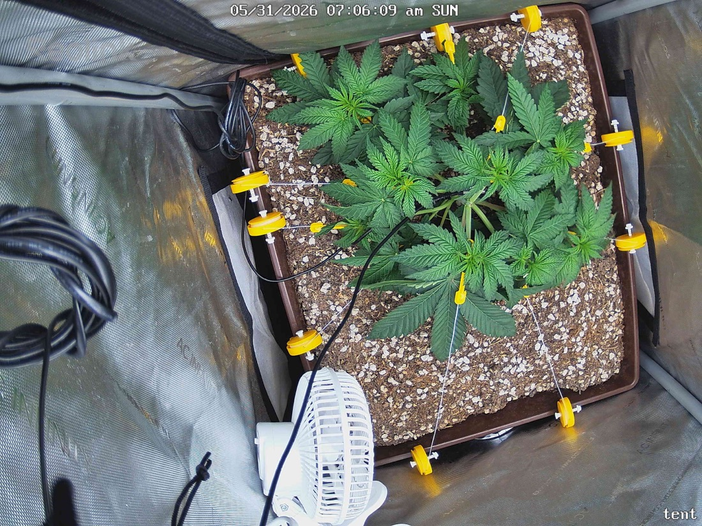

← All reports
May 31, 2026
Sun May 31, 2026 — 7:06 AM

Prognosis
Daily prognosis — papaya crush (day 33 from germ, day 26 in tent)
- What changed: Canopy has spread visibly wider since yesterday — more lateral fan leaves filling the perimeter of the pot. Additional LST tie-down point added on the lower-right (new yellow clip), pulling another branch outward. Center is opening up nicely, exposing inner nodes to light.
- Color & posture: Uniform deep green, leaves flat and horizontal, healthy turgor. No praying, no taco, no droop. Petioles look strong.
- Stress signs: None visible — no tip burn, no interveinal yellowing, no clawing, no spots/pests/webbing. Soil surface looks evenly dry on top (day 3 since last water on 5/28), which is normal/expected before the next watering.
- Training response: LST is doing exactly what you want — apical dominance broken from the 5/23 top, and the tie-downs are flattening the canopy into a wider, even profile. Multiple equal-height tops are forming.
- Phase check: ~5 weeks from germ, ~4 weeks in tent, post-top + active LST — right on track for mid-veg. Node spacing is tight (good — confirms light level is appropriate at 500 PPFD), and you've got the structure to keep filling the 2x2 footprint.
- Watering note: You're at day 3 of a 4–5 day cycle. Lift-test the pot tomorrow; given the canopy growth, transpiration is climbing and you may land closer to the 4-day end of the window.
- Light: 500 PPFD still looks appropriate — leaves flat, no bleaching at the tops nearest the fixture. Room to push to 550–600 in the next few days if you want to keep pressing, but no rush.
Suggested next actions: No action needed today. Check pot weight tomorrow morning; continue tucking/tying new growth as it reaches above the canopy plane.
Overall: Textbook healthy mid-veg plant responding well to topping + LST — keep doing what you're doing.